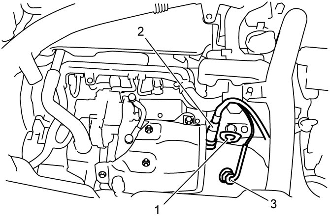

5F
| Twin Clutch System Unit Dismounting and Remounting |
Dismounting
1)If hydraulic circuit parts is removed after dismounting twin clutch system, it is necessary to perform “Hydraulic Circuit Depressurization” function under “Utility” mode on SUZUKI scan tool referring Hydraulic Circuit Depressurization Procedure.
2)Dismount twin clutch system unit with engine. 
3)Remove front drive shaft assembly.
4)Remove transfer assembly.

NOTICE:
When lifting engine assembly using chain hoist or the like with engine hook (1), chain or hook may interfere with A/F sensor-1 (2) and EGT sensor-1 (3) including their harnesses and damage them.
Before lifting engine assembly using chain hoist, remove A/F sensor-1 and EGT sensor- 1.

 "Expand image")
5)Remove intercooler outlet pipe.
6)Remove starting motor.
7)Remove the following parts.
•Engine left mounting
•Engine left mounting No.2 bracket
•Engine left mounting No.2 bracket
8)Remove DPF®.
9)Remove DPF® bracket.
10)Remove twin clutch system unit to engine bolts and nut and then detach twin clutch system unit from engine.
Remounting
NOTICE:
•Improper installation of twin clutch system unit to engine will damage engine flywheel inner plate. Take the following precautions when installing the unit to the engine.
—Preload adjustment of the engine flywheel must be performed beforehand.
—Before tightening the bolts and nut, check that the unit is installed to the engine tightly without clearance.
Bringing the unit into contact with the engine by tightening the bolts and nut is inhibited.
•Failure to take proper precautions when remounting the twin clutch system unit can cause damage to parts.—Before tightening the bolts and nut, check that the unit is installed to the engine tightly without clearance.
Bringing the unit into contact with the engine by tightening the bolts and nut is inhibited.
—When installing the twin clutch system unit, be careful not to let the drive shaft scratch the oil seal.
Oil leakage may occur if the oil seal lip is scratched by the drive shaft.
—Do not use a hammer when installing the drive shaft joint into the differential gear.
Hitting the drive shaft joint with a hammer will damage the joint.
Oil leakage may occur if the oil seal lip is scratched by the drive shaft.
—Do not use a hammer when installing the drive shaft joint into the differential gear.
Hitting the drive shaft joint with a hammer will damage the joint.
Reverse dismounting procedure noting the following points.
•Adjust flywheel preload.
•After replacing twin clutch system unit, perform TCM and Clutch Initialization.
•Check that there is no oil leakage at each connection.
•Check front wheel alignment.
NOTE:
•Tighten the following bolts and nut to specified torque.When twin clutch system unit is detached from the engine flywheel, tooth-to-claw clearance of engagement teeth in the flywheel is reduced at 6 positions by return movement of flywheel outer plate. Therefore, when engaging the twin clutch system unit with the engine flywheel, it is necessary to expand the tooth-to-claw clearance moving the flywheel outer plate referring to Flywheel Preload Adjustment.
—Transaxle to twin clutch system unit bolt and nut:
—Engine left mounting and No.2 bracket bolt
•Set each clamp for wiring securely.—Engine left mounting and No.2 bracket bolt
•After replacing twin clutch system unit, perform TCM and Clutch Initialization.
•Check that there is no oil leakage at each connection.
•Check front wheel alignment.